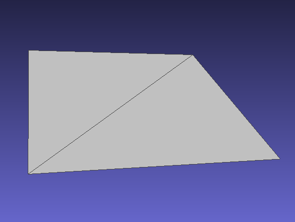
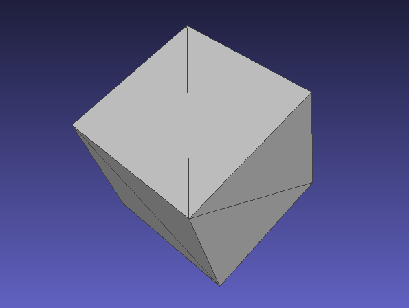
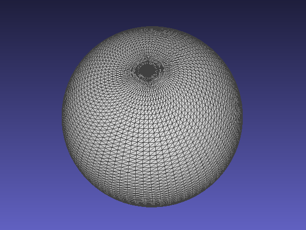
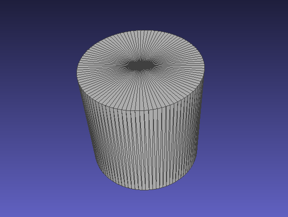

Tools
There are some helpful command line tools that are compiled alongside the main library. After installation the tools are globally available to be called.
rmagine_version
Prints the rmagine version. Should match the CMakeLists version.
user@pc:~/rmagine/build$ ./bin/rmagine_version
2.2.1
rmagine_benchmark
For every implemented computing device we compile a benchmark executable that simulates a Velodyne LiDAR sensor in a given mesh and prints out some useful run time statisitics. Thus, we can compare the run times of different implementations on several computers. The CPU / Embree version can be tested like this:
user@pc:~/rmagine/build$ ./bin/rmagine_benchmark_cpu ../dat/sphere.ply
Rmagine Benchmark CPU (Embree)
Inputs:
- mesh: ../dat/sphere.ply
Unit: 1 Velodyne scan (velo) = 14400 Rays
- range of last ray: 0.998762
-- Starting Benchmark --
[ 129% - 2215.605926 velos/s, mean: 2387.607002 velos/s]
Result: 2387.607002 velos/s
Analogously, the GPU benchmark can be started as follows:
user@pc:~/rmagine/build$ ./bin/rmagine_benchmark_gpu ../dat/sphere.ply
[RMagine - CudaContext] CUDA Driver Version / Runtime Version: 12.2.0 / 12.2.0
[RMagine - CudaContext] Construct context on device 0 - NVIDIA GeForce RTX 2060
[RMagine - OptixContext] Init Optix (7.3.0). Required GPU driver >= 465.84
Rmagine Benchmark GPU (OptiX)
Inputs:
- mesh: ../dat/sphere.ply
Unit: 1 Velodyne scan (velo) = 14400 Rays
Last Ray:
- range: 0.998762
-- Starting Benchmark --
[ 100% - 231941.938409 velos/s, mean: 231987.481164 velos/s]
Result: 231987.481164 velos/s
rmagine_map_info
Prints useful information about the contents of a mesh file. Internally it is just printing the meta information of the assimp buffers.
user@pc:~/rmagine/build$ ./bin/rmagine_map_info ../dat/two_cubes.dae
Rmagine Map Info
Inputs:
- filename: ../dat/two_cubes.dae
Meshes: 2
Mesh 0
- name: Cube_001-mesh
- vertices, faces: 36, 12
- primitives: TRIANGLE
- normals: yes
- vertex color channels: 0
- uv channels: 1
- bones: 0
- material index: 1
- tangents and bitangents: no
- aabb: AABB [v[0,0,0] - v[0,0,0]]
Mesh 1
- name: Cube-mesh
- vertices, faces: 36, 12
- primitives: TRIANGLE
- normals: yes
- vertex color channels: 0
- uv channels: 1
- bones: 0
- material index: 0
- tangents and bitangents: no
- aabb: AABB [v[0,0,0] - v[0,0,0]]
Textures: 0
Scene Graph:
- name: Scene
- transform:
M4x4[
1 0 0 0
0 1 0 0
0 0 1 0
0 0 0 1
]
- meshes: 0
- children: 4
Node 0
- name: Cube_001
- transform:
M4x4[
1 0 0 5.01877
0 1 0 3.78582
0 0 1 1.01026
0 0 0 1
]
- meshes: 1
- mesh ref 0 -> 0
- children: 0
Node 1
- name: Camera
- transform:
M4x4[
0.685921 -0.324014 0.651558 7.35889
0.727676 0.305421 -0.61417 -6.92579
0 0.895396 0.445271 4.95831
0 0 0 1
]
- meshes: 0
- children: 0
Node 2
- name: Light
- transform:
M4x4[
-0.290865 -0.771101 0.566393 4.07624
0.955171 -0.199883 0.218391 1.00545
-0.0551891 0.604525 0.794672 5.90386
0 0 0 1
]
- meshes: 0
- children: 0
Node 3
- name: Cube
- transform:
M4x4[
1.64731 1.34142 -0.299005 5.7392
-1.28721 1.34237 -1.06938 -4.66034
-0.481559 1.00054 1.83561 1.69496
0 0 0 1
]
- meshes: 1
- mesh ref 0 -> 1
- children: 0
rmagine_synthetic
Generate different meshes for quick testing. Show the possible options by entering
user@pc:~/rmagine/build$ ./bin/rmagine_synthetic
Rmagine Synthetic
Usage: ./bin/rmagine_synthetic mesh_type mesh_file
- mesh_type: plane | cube | sphere | cylinder
|  |  |
rmagine_synthetic plane plane.ply |
rmagine_synthetic cube cube.ply |
|  |  |
rmagine_synthetic sphere sphere.ply |
rmagine_synthetic cylinder cylinder.ply |